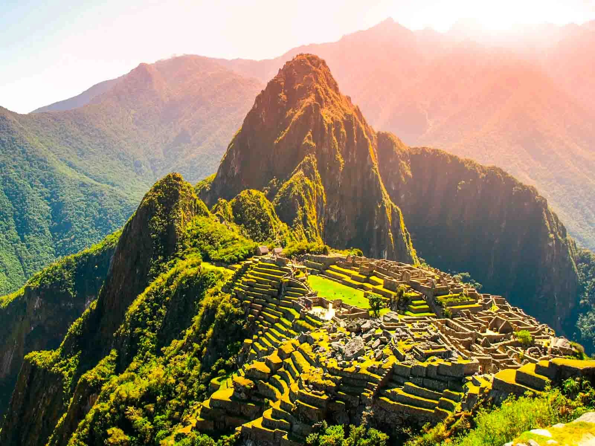

Explore the World
Explore some of the world's most famous and breathtaking travel destinations. Each place offers a unique blend of culture, history, and natural beauty. If you're ready to be inspired, here are some iconic destinations that should be on your travel bucket list:
- Paris, France – Eiffel Tower, Seine River, Louvre Museum.
- Kyoto, Japan – Cherry blossoms, Fushimi Inari Shrine.
- Machu Picchu, Peru – Incan heritage, mountain hikes. 
- Santorini, Greece – Blue domes, sunsets, Aegean Sea.

Paris is not only known as the City of Love but also as the City of Lights, offering an unforgettable blend of history, art, and culture. Visitors can marvel at the iconic Eiffel Tower, take a romantic stroll along the Seine River, and admire masterpieces at the Louvre Museum. This city is perfect for anyone looking to experience the magic of romance and art.

A city rich in history and tradition, Kyoto boasts stunning temples, serene gardens, and traditional tea houses. Travelers can enjoy the beauty of cherry blossoms in spring and explore the famous Fushimi Inari Shrine with its iconic red gates. Kyoto is a perfect blend of peacefulness and cultural heritage, ideal for those seeking tranquility.
A UNESCO World Heritage Site, Machu Picchu is an ancient Incan city nestled high in the Peruvian mountains. Whether you hike the Inca Trail or take a scenic train ride, the journey to this awe-inspiring landmark is just as captivating as the destination itself. For history lovers and adventure seekers alike, Machu Picchu offers a once-in-a-lifetime experience.

Famous for its stunning sunsets, white-washed buildings, and blue waters, Santorini is a dream destination for travelers seeking a mix of relaxation and adventure.